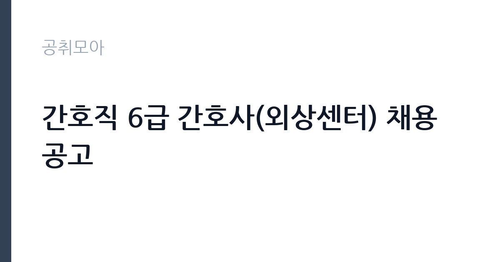

[공공기관] 간호직 6급 간호사(외상센터) 채용 공고
국립중앙의료원 · 서울 · 마감 2026-10-19 (D-16) · 출처 잡알리오

한눈에 보는 모집 조건
| 기관 | 국립중앙의료원 |
|---|---|
| 공고명 | 간호직 6급 간호사(외상센터) 채용 공고 |
| 고용형태 | 정규직 |
| 근무지 | 서울 |
| 게시일 | 2026-10-02 |
| 마감일 | 2026-10-19 (D-16) |
지원자격, 이렇게 읽으세요
- 공공기관 채용공시
- 세부 조건은 원문 공고문 확인
필수 조건은 간호사 면허증 소지와 3교대 근무 가능 두 가지로 명확합니다. 우대사항은 한국형 응급환자 분류도구 교육 이수자와 권역외상센터 1년 이상 근무 경험자입니다. 외상센터 특성상 응급실이나 중환자실, 수술실 경력이 있으면 서류와 면접에서 강점이 됩니다. 세부 응시자격과 제출서류, 전형별 배점은 알리오 공시 원문과 국립중앙의료원 채용 공고에서 확인하시기 바랍니다.
이 공고의 포인트
국립중앙의료원은 서울 을지로에 있는 국가 중앙 의료기관으로, 국내 중증외상 치료의 컨트롤타워 역할을 합니다. 외상센터 간호사는 외상소생실과 외상중환자실, 외상병동을 오가며 골든아워를 다투는 환자를 돌봅니다. 고난도 술기와 중증도 높은 케이스를 집중적으로 경험할 수 있어 응급간호 전문간호사나 외상 관련 인증을 준비하는 분께는 최고의 이력이 됩니다. 국립대병원이 아닌 국가기관 소속 정규직이라는 점도 안정성 측면에서 강점입니다.
전형은 어떻게 진행되나
통상 서류전형 후 면접전형으로 진행되며, 필요시 인성검사나 신체검사가 포함됩니다. 서류에서는 면허와 경력의 적합성을, 면접에서는 응급상황 판단력과 교대근무 적응력, 팀워크를 봅니다. 정확한 전형 단계와 일정은 원문 공고문을 기준으로 준비하시기 바랍니다.
원문에서 확인한 전형 방식
[필수] 아래 두가지 조건을 모두 충족하는 자 ·간호사 면허증 소지자 ·3교대 근무 가능자 [우대] ·KTAS(한국형 응급환자 분류도구) 교육 이수자 ·권역외상센터 1년 이상 근무 경험자
이런 분께 추천해요
- 응급실·중환자실·수술실 경력을 살려 외상 간호 전문가로 성장하고 싶은 분
- 3교대 근무가 가능하고 고강도 현장을 감당할 체력과 의지가 있는 분
- 국가기관 소속 정규직 간호사로 안정성과 전문성을 함께 원하는 분
지원 전 체크리스트
- 간호사 면허증과 3교대 근무 가능 여부를 확인했습니다
- 교육 이수증과 경력증명서를 미리 발급받았습니다
- 접수 마감 10월 19일 전에 지원서를 제출할 수 있습니다
- 원문에서 근무부서와 교대 형태, 보수 조건을 확인했습니다
모집 일정과 제출 타이밍
접수 마감일은 2026년 10월 19일입니다. 서류 합격자 발표와 면접 일정은 국립중앙의료원 채용 홈페이지와 알리오 공시를 통해 안내됩니다. 간호사 채용은 지원자가 몰리는 편이니, 마감일 당일 접수는 피하고 여유 있게 제출하시기 바랍니다.
직무 이해하기: 공공기관
외상센터 간호사는 중증외상 환자의 초기 소생부터 중환자실 관리, 병동 회복기 간호까지 이어지는 전 과정을 담당합니다. 외상소생실에서는 의사·응급구조사와 한 팀으로 대량출혈 환자의 수혈과 처치를 보조하고, 중환자실에서는 인공호흡기와 승압제를 다루는 고난도 간호를 수행합니다. 상태가 시시각각 변하는 환자를 읽는 관찰력과 빠른 보고 체계가 핵심 역량입니다.
자기소개서 작성 팁
자기소개서에는 응급상황에서 본인이 판단하고 행동했던 경험을 구체적으로 쓰시기 바랍니다. 환자 중증도 분류, 처치 보조, 보호자 설명 같은 장면을 시간 순서로 풀어내면 현장감이 살아납니다. 외상센터를 지원하는 이유도 막연한 사명감이 아니라, 어떤 술기와 역량을 갖추고 싶은지로 풀어내는 것이 좋습니다.
면접 준비 포인트
면접에서는 응급상황 우선순위 판단과 교대근무 적응 의지를 확인합니다. 다수 중증환자 동시 내원, 의료진과 의견이 갈릴 때의 대처, 야간 근무 체력 관리 같은 질문이 나옵니다. 교육 이수 경험과 권역외상센터 경력이 있다면 어떤 케이스를 다뤘는지STAR 방식으로 정리해 가시기 바랍니다.
급여·근무조건 읽는 법
보수는 국립중앙의료원 6급 간호직 보수체계가 적용되며, 정확한 금액은 원문 공고문에서 확인하시기 바랍니다. 참고 수치를 보면, 취업정보 사이트 정리 기준 국립중앙의료원 신규 간호사 초봉은 세전 약 4,000만 원 내외, 경력 포함 평균 연봉은 약 5,640만 원 수준으로 소개된 바 있습니다. 재직자 분석에 따르면 6급 1호봉 수습 기준 기본급 월 2,276,500원에 4개월차부터 특수업무수당 등이 더해지는 구조입니다. 기본급과 수당, 야간·초과 수당을 구분하면 실수령을 가늠할 수 있으며, 3교대 수당은 월별 근무표에 따라 달라집니다.
자주 묻는 질문
- 외상센터가 처음인데 지원할 수 있나요?
필수 조건은 면허와 3교대 가능 여부이며, 외상센터 경력은 우대사항입니다. 응급·중환자 관련 경력이나 교육 이수가 있다면 충분히 도전할 수 있습니다. - 근무지는 어디인가요?
국립중앙의료원(서울 중구 을지로) 외상센터 근무입니다. 통근 거리와 교대근무 여건을 미리 따져보시기 바랍니다. - 6급은 어떤 직급인가요?
국립중앙의료원 간호직 6급은 신규·주니어 간호사가 시작하는 직급으로, 호봉이 오르면 5급 등으로 승급합니다. 호봉 획정과 승급 기준은 병원 내규에 따릅니다.
함께 보면 좋은 공고
[공공기관] 2026년 4차 기간제(보일러운전원(야간))근로자 채용 — 마감 2026-10-17[공공기관] 간호직 6급 간호사(간호부-수술실) 채용 공고 — 마감 2026-10-19[공공기관] 대한적십자사 서울남부혈액원 비정규직 한시적 고령직 근로자 채용 공고(만 60세 이상) — 마감 2026-10-17출처: 잡알리오 공개정보를 바탕으로 공취모아가 정리한 안내글입니다. 모집 조건·일정은 변경될 수 있으니 지원 전 반드시 원문 공고문을 확인하세요. 본 글은 정보 제공용이며 합격을 보장하지 않습니다.